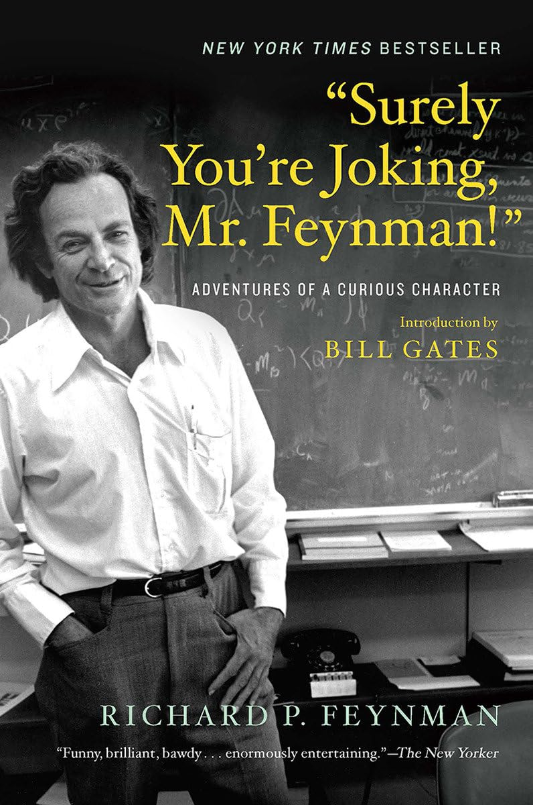

普林斯顿的一次下午茶会上，主持茶会的院长夫人问理查德·费曼（Richard P. Feynman）：茶里要加奶油还是柠檬？费曼心不在焉地答"都要"，夫人笑着说："别闹了，费曼先生（Surely you're joking, Mr. Feynman）——你总不会两样都要吧。"这句半是玩笑的话，后来成了他这本回忆录的书名。全书1985年由W. W. Norton出版，内容并非费曼亲笔写就，而是他与鼓友拉尔夫·莱顿（Ralph Leighton，物理学家罗伯特·莱顿之子）多年打鼓间隙闲聊，由莱顿把录音整理成篇。中文版《别闹了，费曼先生》由王祖哲翻译，收入湖南科学技术出版社"走近费曼丛书"，2005年出版。
费曼1965年因量子电动力学（QED）的重整化工作与施温格、朝永振一郎分享诺贝尔物理学奖，长期任教于加州理工学院。但这本书几乎不谈他获奖的物理，而是把镜头对准一个把世界当谜题的好奇心。最有名的一组故事发生在洛斯阿拉莫斯的曼哈顿计划期间：他出于好奇钻研锁具原理，把装着核机密文件的保险柜一个个撬开，只为证明军方引以为傲的保密体系不堪一击，还常留张纸条捉弄同事。他也写下与玻尔（Niels Bohr）打交道的经历——这位量子力学奠基人在洛斯阿拉莫斯化名"尼古拉斯·贝克"，偏偏点名找当时资历尚浅的费曼私下讨论，因为只有费曼敢毫不客气地反驳他，其他人都因敬畏而不敢直言。
书里的费曼几乎什么都想试一试。他学开保险柜，也学画画，一度以"欧菲"为笔名办画展、给酒吧画裸体；他到巴黎的桑巴乐队里打小鼓（frigideira），也在巴西教物理时公开批评当地"死记硬背、考试满分却不懂任何东西"的科学教育；他为了搞清神经如何工作跑去生物系做猫的解剖，还煞有介事地和同学争论"洋葱细胞"。这些插曲串起来，构成一幅拒绝把自己限定在物理学家身份里的自画像。
全书以《草包族科学》（Cargo Cult Science）收尾，这一章改写自他1974年在加州理工毕业典礼上的演讲。他用南太平洋岛民模仿机场跑道、戴椰壳耳机等待飞机降落却始终等不来的故事，讽刺那些形式齐备、方法却经不起推敲的"科学"。他留下那句被反复引用的告诫："第一条原则是你不能欺骗自己——而你恰恰是最容易被自己骗的人（The first principle is that you must not fool yourself—and you are the easiest person to fool）。"对读商业与投资的人来说，这本书的价值不在具体知识，而在示范一种对待世界的态度：凡事亲自拆开来看、不迷信权威、警惕自欺。这种"诚实到近乎苛刻"的求真习惯，与查理·芒格反复强调的独立思考同出一辙。